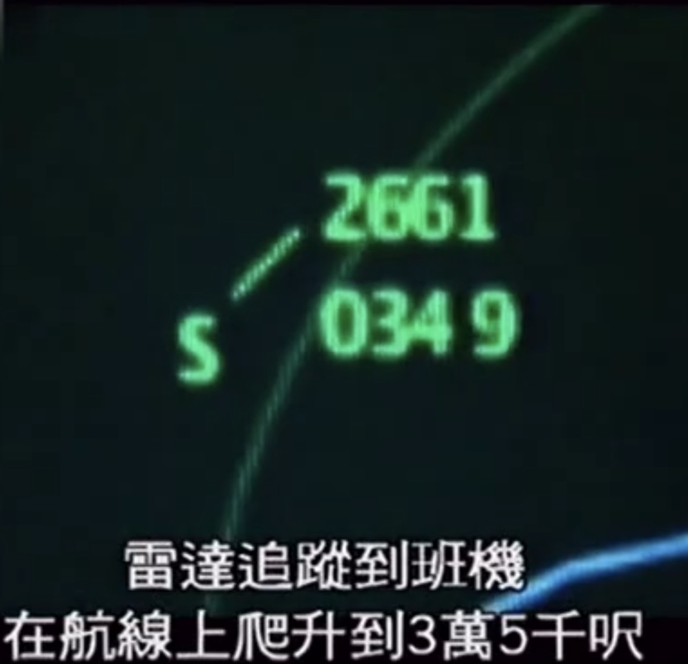
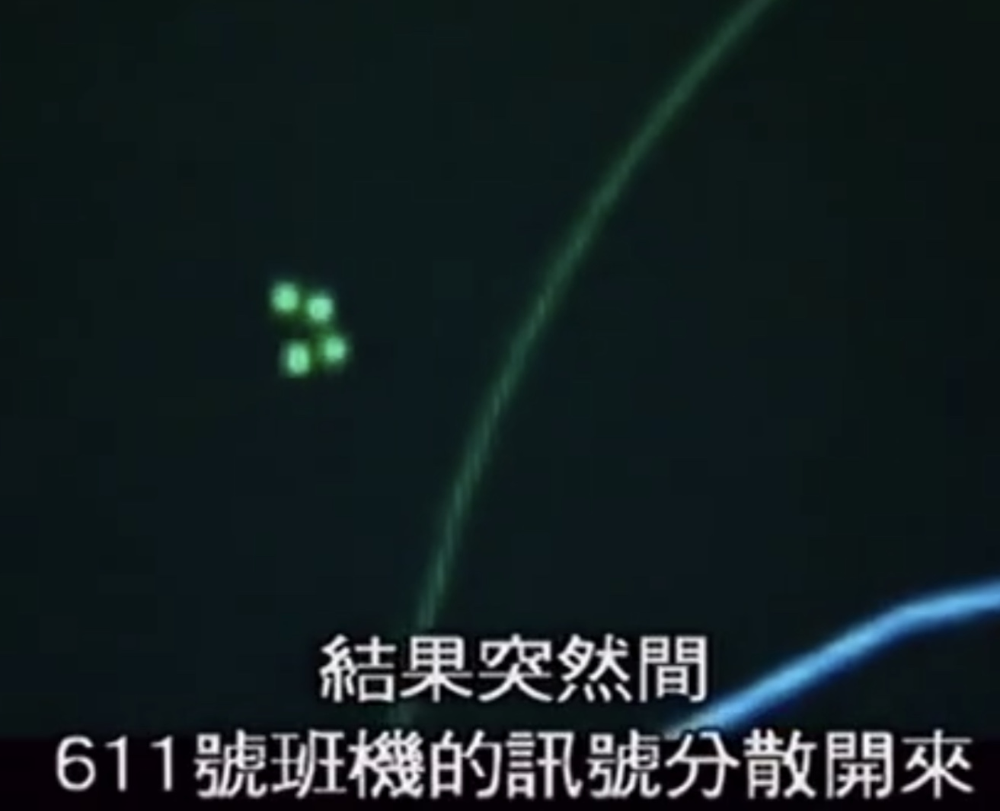

<!DOCTYPE html>


<html lang="zh-CN">


<head>
  <meta charset="utf-8" />
    
  <meta name="viewport" content="width=device-width, initial-scale=1, maximum-scale=1" />
  <title>
    伴随航空的“逆境” |  旅行在梦中的人
  </title>
  <meta name="generator" content="hexo-theme-ayer">
  
  <link rel="shortcut icon" href="/favicon.ico" />
  
  
<link rel="stylesheet" href="/dist/main.css">

  
<link rel="stylesheet" href="https://cdn.jsdelivr.net/gh/Shen-Yu/cdn/css/remixicon.min.css">

  
<link rel="stylesheet" href="/css/custom.css">

  
  
<script src="https://cdn.jsdelivr.net/npm/pace-js@1.0.2/pace.min.js"></script>

  
  

  

</head>

</html>

<body>
  <div id="app">
    
      
    <main class="content on">
      <section class="outer">
  <article
  id="post-伴随航空的“逆境”"
  class="article article-type-post"
  itemscope
  itemprop="blogPost"
  data-scroll-reveal
>
  <div class="article-inner">
    
    <header class="article-header">
       
<h1 class="article-title sea-center" style="border-left:0" itemprop="name">
  伴随航空的“逆境”
</h1>
 

    </header>
     
    <div class="article-meta">
      <a href="/2020/AviationSafety/" class="article-date">
  <time datetime="2020-05-24T13:23:42.000Z" itemprop="datePublished">2020-05-24</time>
</a> 
  <div class="article-category">
    <a class="article-category-link" href="/categories/%E8%88%AA%E7%A9%BA/">航空</a> / <a class="article-category-link" href="/categories/%E8%88%AA%E7%A9%BA/%E4%BA%8B%E6%95%85/">事故</a>
  </div>
  
<div class="word_count">
    <span class="post-time">
        <span class="post-meta-item-icon">
            <i class="ri-quill-pen-line"></i>
            <span class="post-meta-item-text"> 字数统计:</span>
            <span class="post-count">1.6k</span>
        </span>
    </span>

    <span class="post-time">
        &nbsp; | &nbsp;
        <span class="post-meta-item-icon">
            <i class="ri-book-open-line"></i>
            <span class="post-meta-item-text"> 阅读时长≈</span>
            <span class="post-count">5 分钟</span>
        </span>
    </span>
</div>
 
    </div>
      
    <div class="tocbot"></div>


  
    <div class="article-entry" itemprop="articleBody">
       
  <h1 id="伴随航空的“逆境”"><a href="#伴随航空的“逆境”" class="headerlink" title="伴随航空的“逆境”"></a>伴随航空的“逆境”</h1><blockquote>
<p>Flying is officially the safest way to travel. But safety never comes without adversites.     —-The FlightChannel  </p>
<p>乘坐飞机出行是当前最安全的旅行方式，然而这一安全总是伴随着逆境。  —-译自水岩冰WIce  </p>
</blockquote>
<span id="more"></span>

<h2 id="小时候，惊讶于飞机如何飞起来"><a href="#小时候，惊讶于飞机如何飞起来" class="headerlink" title="小时候，惊讶于飞机如何飞起来"></a>小时候，惊讶于飞机如何飞起来</h2><p>记得小时候，一个大哥哥来我家串门，带来的还有他最喜欢的电脑游戏CD——ぼくは航空管制官３（我是航空管制官3）。  </p>
<blockquote>
<p>ぼくは航空管制官，是日本T社（全称没记住）开发的一款游戏，去年发布了第四代，而我小时候玩的时候还是第三代，所以现在对我管3的游戏BGM特别有感触。  </p>
<p>这款游戏旨在普及空中交通管制的知识，让大家了解飞机安全飞行背后的故事。 简单来讲就是让你作为一个空管员去管制飞机，让飞机安全飞行 </p>
</blockquote>
<p>依稀记得那个时候还小，不知道什么是<em>空中交通管制（Air Traffic Control, ATC）</em>更不知道<em>GND，TWR，APP……</em>都是什么意思，然而只会随便的对飞机发出一些指令，继而安心的沉浸在欣赏飞机在跑道上起起落落。  </p>
<p>小时候，什么都不懂，竟问出飞机为什么会有机翼的问题，更不知还有流体压强一说，那个时候，每次看到一架飞机滑行道跑道，加速，起飞，我都会惊讶于飞机能够飞天的神奇事实。  </p>
<h2 id="长大后，诧异于飞机为何摔下来"><a href="#长大后，诧异于飞机为何摔下来" class="headerlink" title="长大后，诧异于飞机为何摔下来"></a>长大后，诧异于飞机为何摔下来</h2><p>当然，像前文那样在游戏里面看飞机起降的闲情逸致持续不了十几分钟——由于我的胡乱管制所照成的空中接近、地面冲突……（分分钟将日本的每个地方变成骏河湾）  </p>
<p>那时还小，只知道这关失败了，但还可以再来；两机快要相撞了，但还没有撞上；出现事故了，至少不是真的事故。</p>
<p>而现在，再也无法抱有这种心情去玩这款游戏了，提心吊胆于每一次的“擦肩而过”，而后便开始思考一个与儿时截然不同的问题——<strong>飞机为何会摔下来？</strong></p>
<p>18年前，香港的一架飞机从雷达上消失了。如果有幸看到雷达屏幕的话，在CI611消失的同时，屏幕上的一个点分成了四个点，几秒后，它或者称之为“它们”彻底的从雷达上消失不见了。  </p>
<p><br></p>
<p>它就是中华航空611，最终确认为金属疲劳，空中解体，无一人生还。  </p>
<p>前些天，一架A320着陆时未放起落架，复飞过程中不幸遇到双发失效，最终化作一片火海淹没于居民楼中。</p>
<p>它是巴基斯坦8303，事故调查仍在进行，结果未定。</p>
<p>一架载满锂离子电池（多达81000粒）的飞机，空中起火，浓烟进入驾驶舱。高温、浓烟、低能见度，困扰着驾驶员。甚至由于火灾，干扰到操纵杆，驾驶员很难控制飞机。最终在飞机就快要坠毁的时候，副驾驶让飞机转弯，避开一个居民区……  </p>
<p>它是UPS6号。<br>……</p>
<p>揪心，百十个人，就这样淹没于残骸，消失于灰烬……<br>痛心，百十个家庭，就这样同时亲人，永久的伤怀。  </p>
<h3 id="飞机为什么会摔下来？"><a href="#飞机为什么会摔下来？" class="headerlink" title="飞机为什么会摔下来？"></a>飞机为什么会摔下来？</h3><p>有睡着的飞行员，让孩子进入驾驶舱的飞行员，语言不通的飞行员，胡乱驾驶的飞行员……<br>有贴了临时胶布忘了撕下来的地勤，有维护不力的地勤……<br>有粗心的空管，看错了的空管，说错了的空管……</p>
<p><strong>人的错？</strong></p>
<p>有737MAX，有MD-80，有DC10……</p>
<p><strong>飞机的错？</strong></p>
<h3 id="天灾？还是，人祸？概率的锅？"><a href="#天灾？还是，人祸？概率的锅？" class="headerlink" title="天灾？还是，人祸？概率的锅？"></a>天灾？还是，人祸？概率的锅？</h3><blockquote>
<p>Flying is officially the safest way to travel.</p>
</blockquote>
<p>很喜欢的这句话，在墨菲定律面前显得如此苍白。它是实话没错，飞机是目前最安全的交通工具，也是在一定条件下最快捷的。</p>
<p>但是，它也会有事故啊！有时候我常常在想，为什么会是他们，刚好坐上了那架飞机。而为什么同一场空难，两机相撞，最后的结局竟是一架飞机<strong>不幸坠山</strong>，另一架艰难着陆，<strong>全部生还</strong>！</p>
<p>科学可以解释飞机坠毁的原因，概率可以说明飞机坠毁的可能性，墨菲定律能够给人启发。可是，这些根本解释不了<em>为什么那155人登上了这架A320，而那99人登上了那架A320</em>。</p>
<h3 id="In-another-way"><a href="#In-another-way" class="headerlink" title="In another way"></a>In another way</h3><p>航空是安全的，尽管伴随逆境，但正是一次次逆境，给航空安全添砖加瓦，让安全更安全。所以，我会说</p>
<blockquote>
<p>尽管航空安全伴随逆境，但是，乘坐飞机出行仍然是现在最安全的方式。</p>
</blockquote>
<p>愿<strong>空中平安，地面平安，机舱平安。航空，平安！</strong></p>
<h1 id="写在结束之后的"><a href="#写在结束之后的" class="headerlink" title="写在结束之后的"></a>写在结束之后的</h1><h2 id="跑道在空中延续"><a href="#跑道在空中延续" class="headerlink" title="跑道在空中延续"></a>跑道在空中延续</h2><p>一个电脑大小的屏幕，密密的，整齐的排列着不少的几十个点，每个点旁边有着不大的几个数字。这样的点和数字中的几乎每个都随着时间的静静流逝而改变着。同时估计每个点，每个数据，下达正确的指令，你，能做到吗？</p>
<p>不要自信的说“我可以”，又或者是望而生怯“我不能”。去玩一玩我是航空管制官这个游戏吧，空管，没有你想的那么简单，也没有那么难。或许你可以打开航空的大门，细细领略一番。但当涉略，总会有收获，总能多一分对在航站楼等待的谅解。</p>
<p>“跑道在空中延续”这个标题取自我管3里面的某一个关卡名，我很喜欢。相较于一些不幸的“跑道在居民楼中延续”，“在空中延续”总能使我振奋。是啊，虽然只接触了游戏，但是看着飞机沿着跑道的方向排成一排，好像跑道无限延伸一样，繁忙，混乱中的整齐……</p>
<p>*<em>去了解一下航空吧，他很安全，也很脆弱。它需要人多人守护，需要很多人的支持。</em></p>
 
      <!-- reward -->
      
    </div>
    

      <!-- copyright -->
      
        <div class="declare">
          <ul class="post-copyright">
            <li>
              <i class="ri-copyright-line"></i>
              <strong>版权声明： </strong s>
              本博客所有文章除特别声明外，均采用 <a rel="license noopener" target="_blank" href="https://creativecommons.org/licenses/by-nc-sa/4.0/deed.zh">署名-非商业性使用-相同方式共享 4.0 国际 (CC BY-NC-SA 4.0)</a> 许可协议。转载请注明出处！
            </li>
          </ul>
        </div>
        
    <footer class="article-footer">
       
<div class="share-btn">
      <span class="share-sns share-outer">
        <i class="ri-share-forward-line"></i>
        分享
      </span>
      <div class="share-wrap">
        <i class="arrow"></i>
        <div class="share-icons">
          
          <a class="weibo share-sns" href="javascript:;" data-type="weibo">
            <i class="ri-weibo-fill"></i>
          </a>
          <a class="weixin share-sns wxFab" href="javascript:;" data-type="weixin">
            <i class="ri-wechat-fill"></i>
          </a>
          <a class="qq share-sns" href="javascript:;" data-type="qq">
            <i class="ri-qq-fill"></i>
          </a>
          <a class="douban share-sns" href="javascript:;" data-type="douban">
            <i class="ri-douban-line"></i>
          </a>
          <!-- <a class="qzone share-sns" href="javascript:;" data-type="qzone">
            <i class="icon icon-qzone"></i>
          </a> -->
          
          <a class="facebook share-sns" href="javascript:;" data-type="facebook">
            <i class="ri-facebook-circle-fill"></i>
          </a>
          <a class="twitter share-sns" href="javascript:;" data-type="twitter">
            <i class="ri-twitter-fill"></i>
          </a>
          <a class="google share-sns" href="javascript:;" data-type="google">
            <i class="ri-google-fill"></i>
          </a>
        </div>
      </div>
</div>

<div class="wx-share-modal">
    <a class="modal-close" href="javascript:;"><i class="ri-close-circle-line"></i></a>
    <p>扫一扫，分享到微信</p>
    <div class="wx-qrcode">
      
    </div>
</div>

<div id="share-mask"></div>  
  <ul class="article-tag-list" itemprop="keywords"><li class="article-tag-list-item"><a class="article-tag-list-link" href="/tags/%E8%88%AA%E7%A9%BA/" rel="tag">航空</a></li></ul>

    </footer>
  </div>

   
  <nav class="article-nav">
    
      <a href="/2020/Be%20queit!/" class="article-nav-link">
        <strong class="article-nav-caption">上一篇</strong>
        <div class="article-nav-title">
          
            嘘！别说话！
          
        </div>
      </a>
    
    
      <a href="/2020/GraduationMemorial/" class="article-nav-link">
        <strong class="article-nav-caption">下一篇</strong>
        <div class="article-nav-title">九年级的小情绪</div>
      </a>
    
  </nav>

   
<!-- valine评论 -->
<div id="vcomments-box">
  <div id="vcomments"></div>
</div>
<script src="//cdn1.lncld.net/static/js/3.0.4/av-min.js"></script>
<script src="https://cdn.jsdelivr.net/npm/valine@1.4.14/dist/Valine.min.js"></script>
<script>
  new Valine({
    el: "#vcomments",
    app_id: "kbC3QCDmzOt0lyJzVWxUIVJI-gzGzoHsz",
    app_key: "whO77xVyuU9lyN0nWAEUpM8z",
    path: window.location.pathname,
    avatar: "retro",
    placeholder: "说点什么~",
    recordIP: true,
  });
  const infoEle = document.querySelector("#vcomments .info");
  if (infoEle && infoEle.childNodes && infoEle.childNodes.length > 0) {
    infoEle.childNodes.forEach(function (item) {
      item.parentNode.removeChild(item);
    });
  }
</script>
<style>
  #vcomments-box {
    padding: 5px 30px;
  }

  @media screen and (max-width: 800px) {
    #vcomments-box {
      padding: 5px 0px;
    }
  }

  #vcomments-box #vcomments {
    background-color: #fff;
  }

  .v .vlist .vcard .vh {
    padding-right: 20px;
  }

  .v .vlist .vcard {
    padding-left: 10px;
  }
</style>

 
     
</article>

</section>
      <footer class="footer">
  <div class="outer">
    <ul>
      <li>
        Copyrights &copy;
        2015-2021
        <!--<i class="ri-heart-fill heart_icon"></i>--> 旅行在梦中的人
      </li>
    </ul>
    <ul>
      <li>
        
        
        
        由 <a href="https://hexo.io" target="_blank">Hexo</a> 强力驱动
        <span class="division">|</span>
        主题 - <a href="https://github.com/Shen-Yu/hexo-theme-ayer" target="_blank">Ayer</a>
        
      </li>
    </ul>
    <ul>
      <li>
        
        
        <span>
  <span><i class="ri-user-3-fill"></i>访问人数:<span id="busuanzi_value_site_uv"></span></s>
  <span class="division">|</span>
  <span><i class="ri-eye-fill"></i>浏览次数:<span id="busuanzi_value_page_pv"></span></span>
</span>
        
      </li>
    </ul>
    <ul>
      
    </ul>
    <ul>
      <li>
        <!-- cnzz统计 -->
        
      </li>
    </ul>
  </div>
</footer>
      <div class="float_btns">
        <div class="totop" id="totop">
  <i class="ri-arrow-up-line"></i>
</div>

<div class="todark" id="todark">
  <i class="ri-moon-line"></i>
</div>

      </div>
    </main>
    <aside class="sidebar on">
      <button class="navbar-toggle"></button>
<nav class="navbar">
  
  <div class="logo">
    <a href="/"></a>
  </div>
  
  <ul class="nav nav-main">
    
    <li class="nav-item">
      <a class="nav-item-link" href="/">主页</a>
    </li>
    
    <li class="nav-item">
      <a class="nav-item-link" href="/archives">全部</a>
    </li>
    
    <li class="nav-item">
      <a class="nav-item-link" href="/categories">分类</a>
    </li>
    
    <li class="nav-item">
      <a class="nav-item-link" href="/tags">标签</a>
    </li>
    
    <li class="nav-item">
      <a class="nav-item-link" href="/2020/about">关于</a>
    </li>
    
    <li class="nav-item">
      <a class="nav-item-link" href="https://shitong-cai.gitee.io/class3website">三班的家</a>
    </li>
    
  </ul>
</nav>
<nav class="navbar navbar-bottom">
  <ul class="nav">
    <li class="nav-item">
      
      <a class="nav-item-link nav-item-search"  title="搜索">
        <i class="ri-search-line"></i>
      </a>
      
      
      <a class="nav-item-link" target="_blank" href="/atom.xml" title="RSS Feed">
        <i class="ri-rss-line"></i>
      </a>
      
    </li>
  </ul>
</nav>
<div class="search-form-wrap">
  <div class="local-search local-search-plugin">
  <input type="search" id="local-search-input" class="local-search-input" placeholder="Search...">
  <div id="local-search-result" class="local-search-result"></div>
</div>
</div>
    </aside>
    <script>
      if (window.matchMedia("(max-width: 768px)").matches) {
        document.querySelector('.content').classList.remove('on');
        document.querySelector('.sidebar').classList.remove('on');
      }
    </script>
    <div id="mask"></div>

<!-- #reward -->
<div id="reward">
  <span class="close"><i class="ri-close-line"></i></span>
  <p class="reward-p"><i class="ri-cup-line"></i>请我喝杯咖啡吧~</p>
  <div class="reward-box">
    
    
  </div>
</div>
    
<script src="/js/jquery-2.0.3.min.js"></script>


<script src="/js/lazyload.min.js"></script>

<!-- Tocbot -->


<script src="/js/tocbot.min.js"></script>

<script>
  tocbot.init({
    tocSelector: '.tocbot',
    contentSelector: '.article-entry',
    headingSelector: 'h1, h2, h3, h4, h5, h6',
    hasInnerContainers: true,
    scrollSmooth: true,
    scrollContainer: 'main',
    positionFixedSelector: '.tocbot',
    positionFixedClass: 'is-position-fixed',
    fixedSidebarOffset: 'auto'
  });
</script>

<script src="https://cdn.jsdelivr.net/npm/jquery-modal@0.9.2/jquery.modal.min.js"></script>
<link rel="stylesheet" href="https://cdn.jsdelivr.net/npm/jquery-modal@0.9.2/jquery.modal.min.css">
<script src="https://cdn.jsdelivr.net/npm/justifiedGallery@3.7.0/dist/js/jquery.justifiedGallery.min.js"></script>

<script src="/dist/main.js"></script>

<!-- ImageViewer -->

<!-- Root element of PhotoSwipe. Must have class pswp. -->
<div class="pswp" tabindex="-1" role="dialog" aria-hidden="true">

    <!-- Background of PhotoSwipe. 
         It's a separate element as animating opacity is faster than rgba(). -->
    <div class="pswp__bg"></div>

    <!-- Slides wrapper with overflow:hidden. -->
    <div class="pswp__scroll-wrap">

        <!-- Container that holds slides. 
            PhotoSwipe keeps only 3 of them in the DOM to save memory.
            Don't modify these 3 pswp__item elements, data is added later on. -->
        <div class="pswp__container">
            <div class="pswp__item"></div>
            <div class="pswp__item"></div>
            <div class="pswp__item"></div>
        </div>

        <!-- Default (PhotoSwipeUI_Default) interface on top of sliding area. Can be changed. -->
        <div class="pswp__ui pswp__ui--hidden">

            <div class="pswp__top-bar">

                <!--  Controls are self-explanatory. Order can be changed. -->

                <div class="pswp__counter"></div>

                <button class="pswp__button pswp__button--close" title="Close (Esc)"></button>

                <button class="pswp__button pswp__button--share" style="display:none" title="Share"></button>

                <button class="pswp__button pswp__button--fs" title="Toggle fullscreen"></button>

                <button class="pswp__button pswp__button--zoom" title="Zoom in/out"></button>

                <!-- Preloader demo http://codepen.io/dimsemenov/pen/yyBWoR -->
                <!-- element will get class pswp__preloader--active when preloader is running -->
                <div class="pswp__preloader">
                    <div class="pswp__preloader__icn">
                        <div class="pswp__preloader__cut">
                            <div class="pswp__preloader__donut"></div>
                        </div>
                    </div>
                </div>
            </div>

            <div class="pswp__share-modal pswp__share-modal--hidden pswp__single-tap">
                <div class="pswp__share-tooltip"></div>
            </div>

            <button class="pswp__button pswp__button--arrow--left" title="Previous (arrow left)">
            </button>

            <button class="pswp__button pswp__button--arrow--right" title="Next (arrow right)">
            </button>

            <div class="pswp__caption">
                <div class="pswp__caption__center"></div>
            </div>

        </div>

    </div>

</div>

<link rel="stylesheet" href="https://cdn.jsdelivr.net/npm/photoswipe@4.1.3/dist/photoswipe.min.css">
<link rel="stylesheet" href="https://cdn.jsdelivr.net/npm/photoswipe@4.1.3/dist/default-skin/default-skin.min.css">
<script src="https://cdn.jsdelivr.net/npm/photoswipe@4.1.3/dist/photoswipe.min.js"></script>
<script src="https://cdn.jsdelivr.net/npm/photoswipe@4.1.3/dist/photoswipe-ui-default.min.js"></script>

<script>
    function viewer_init() {
        let pswpElement = document.querySelectorAll('.pswp')[0];
        let $imgArr = document.querySelectorAll(('.article-entry img:not(.reward-img)'))

        $imgArr.forEach(($em, i) => {
            $em.onclick = () => {
                // slider展开状态
                // todo: 这样不好，后面改成状态
                if (document.querySelector('.left-col.show')) return
                let items = []
                $imgArr.forEach(($em2, i2) => {
                    let img = $em2.getAttribute('data-idx', i2)
                    let src = $em2.getAttribute('data-target') || $em2.getAttribute('src')
                    let title = $em2.getAttribute('alt')
                    // 获得原图尺寸
                    const image = new Image()
                    image.src = src
                    items.push({
                        src: src,
                        w: image.width || $em2.width,
                        h: image.height || $em2.height,
                        title: title
                    })
                })
                var gallery = new PhotoSwipe(pswpElement, PhotoSwipeUI_Default, items, {
                    index: parseInt(i)
                });
                gallery.init()
            }
        })
    }
    viewer_init()
</script>

<!-- MathJax -->

<script type="text/x-mathjax-config">
  MathJax.Hub.Config({
      tex2jax: {
          inlineMath: [ ['$','$'], ["\\(","\\)"]  ],
          processEscapes: true,
          skipTags: ['script', 'noscript', 'style', 'textarea', 'pre', 'code']
      }
  });

  MathJax.Hub.Queue(function() {
      var all = MathJax.Hub.getAllJax(), i;
      for(i=0; i < all.length; i += 1) {
          all[i].SourceElement().parentNode.className += ' has-jax';
      }
  });
</script>

<script src="https://cdn.jsdelivr.net/npm/mathjax@2.7.6/unpacked/MathJax.js?config=TeX-AMS-MML_HTMLorMML"></script>
<script>
  var ayerConfig = {
    mathjax: true
  }
</script>

<!-- Katex -->


    
        <link rel="stylesheet" href="https://cdn.jsdelivr.net/npm/katex@0.11.1/dist/katex.min.css">
        <script src="https://cdn.jsdelivr.net/npm/katex@0.11.1/dist/katex.min.js"></script>
        <script src="https://cdn.jsdelivr.net/npm/katex@0.11.1/dist/contrib/auto-render.min.js"></script>
        
            <script src="https://cdn.jsdelivr.net/npm/katex@0.11.1/dist/contrib/copy-tex.min.js"></script>
            <link rel="stylesheet" href="https://cdn.jsdelivr.net/npm/katex@0.11.1/dist/contrib/copy-tex.min.css">
        
    


<!-- busuanzi  -->


<script src="/js/busuanzi-2.3.pure.min.js"></script>


<!-- ClickLove -->

<!-- ClickBoom1 -->

<!-- ClickBoom2 -->

<!-- CodeCopy -->


<link rel="stylesheet" href="/css/clipboard.css">

<script src="https://cdn.jsdelivr.net/npm/clipboard@2/dist/clipboard.min.js"></script>
<script>
  function wait(callback, seconds) {
    var timelag = null;
    timelag = window.setTimeout(callback, seconds);
  }
  !function (e, t, a) {
    var initCopyCode = function(){
      var copyHtml = '';
      copyHtml += '<button class="btn-copy" data-clipboard-snippet="">';
      copyHtml += '<i class="ri-file-copy-2-line"></i><span>COPY</span>';
      copyHtml += '</button>';
      $(".highlight .code pre").before(copyHtml);
      $(".article pre code").before(copyHtml);
      var clipboard = new ClipboardJS('.btn-copy', {
        target: function(trigger) {
          return trigger.nextElementSibling;
        }
      });
      clipboard.on('success', function(e) {
        let $btn = $(e.trigger);
        $btn.addClass('copied');
        let $icon = $($btn.find('i'));
        $icon.removeClass('ri-file-copy-2-line');
        $icon.addClass('ri-checkbox-circle-line');
        let $span = $($btn.find('span'));
        $span[0].innerText = 'COPIED';
        
        wait(function () { // 等待两秒钟后恢复
          $icon.removeClass('ri-checkbox-circle-line');
          $icon.addClass('ri-file-copy-2-line');
          $span[0].innerText = 'COPY';
        }, 2000);
      });
      clipboard.on('error', function(e) {
        e.clearSelection();
        let $btn = $(e.trigger);
        $btn.addClass('copy-failed');
        let $icon = $($btn.find('i'));
        $icon.removeClass('ri-file-copy-2-line');
        $icon.addClass('ri-time-line');
        let $span = $($btn.find('span'));
        $span[0].innerText = 'COPY FAILED';
        
        wait(function () { // 等待两秒钟后恢复
          $icon.removeClass('ri-time-line');
          $icon.addClass('ri-file-copy-2-line');
          $span[0].innerText = 'COPY';
        }, 2000);
      });
    }
    initCopyCode();
  }(window, document);
</script>


<!-- CanvasBackground -->


    
  </div>
</body>

</html>